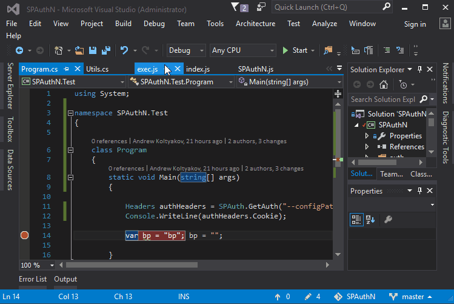
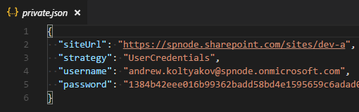

SharePoint .Net authentication via embedded Node.js
Intro
I'm a fan of crazy experiments with technologies and code. How many times I catch myself on saying "Why don't to [insane idea to implement]", then in one grasp after a while seating and scratching my head with "Oh shoot! It's working! O_o". That's how some of my open source projects saw the light.
Last week there was the idea to dig Edge.js a bit. Edge.js is a library which allows running CLR languages like C# .Net from Node.js and vice versa.
For a while, we had a plan of syncing sp-cmd-deploy (.Net module for getting CSOM context) with node-sp-auth-config (Node.js module for a work with auth). Both modules have some common ideas. And it would have been great to share some settings between them.
Jungling these ideas somebody said "Why don't we just use node-sp-auth-conf in our .Net apps too?".
Well... said and done!
SPAuthN
Here our pet Frankenstein SPAuthN.
SPAuthN is a .Net library available in NuGets. And it's a wrapper for node-sp-auth and node-sp-auth-config.
This monster allows authenticating in SharePoint in whatever you need scenarios and provides a wizard-like approach for building and managing connection config files.
Disclaimer
Before reading further, attention, please! On the first place, it is a crazy experiment which solves one of our very specific tasks for a frontier technology stack with SharePoint, Node.js and .Net where we need running the same exactly auth mechanisms which we use in Node.js but in .Net applications. We know exactly what we're doing and why. Please use the lib only in the case when native .Net credentials strategies do not suite your app.
For whom is this library?
For folks who used to create applications for SharePoint with authentication level powered by node-sp-auth-config and node-sp-auth-config and who desire reuse authentication settings parameters and formats in .Net application.
For geeks from geeks passionated with funky technology experiments on their way doing awesome stuff.
For the cases when one tool should rule *all possible authentication strategies in SharePoint.
And definitely not for the situations when these work for you:
- context.Credentials = new SharePointOnlineCredentials("username", "securepass");
- context.Credentials = new NetworkCredential("username", "password", "domain");
- Any other native authentication routes.
Features
SPAuthN supports authenticating against SharePoint Online, 2016, 2013.
It's one ring to rule Addin only permissions, SAML based with user credentials, ADFS user credentials, User credentials through the http NTLM handshake, ADFS user credentials, Form-based (FBA), Forefront TMG authentication strategies.
How it works in a nutshell
- Edge.js's Func wraps some Node.js scripts with wizard, authentication, and utilities
- Edge.js provides embedded runtime for server-side JavaScript
- Script utilities check and install node module dependencies with
node-sp-authand others - Execution is passed to JS side when done option results are passed back to managed code
- Result object contains auth headers which can be injected to HTTP requests and viola!
How to use
Options options = SPAuth.GetAuth();
That's it! Really!
Now options.headers object contains Cookie or Authorization which can be injected to web requests.
This is a low level, session timeouts should be controlled manually.
First run
During very first execution, node modules dependencies are installed. This can take a couple of seconds, second run doesn't need this process repetition so is much faster.
Credentials
node-sp-auth-config is responsible for prompting auth strategy and credentials:

By default, after the prompts are done ./config/private.json file is created in the root folder of the app.

GetAuth checks for ./config/private.json and continues without prompts if all needed for the strategy parameters are filled in.
The password is stored as a secure string, it can be used only on the machine where it was generated. The password can be rewritten in the config and it will be encrypted on next auth method run.
Arguments
GetAuth method receives a string with arguments which are passed as initiators to AuthConfigSettings.
Options options = SPAuth.GetAuth("--encryptPassword=false --configPath='./config/private.uat.json'");
Arguments use cases
Redefine private config file path
--configPath='./config/private.prod.json'
Disable password encryption
--encryptPassword=false
Disable saving private config on disc
--saveConfigOnDisk=false
Enforce parameters prompts
--forcePrompts=true
Raw auth options (example)
--authOptions.siteUrl="http://sharepoint" --authOptions.username="user@contoso.com" --authOptions.password="p@ssw0rd" --saveConfigOnDisk=false
Usage examples
WebRequest
Options options = SPAuth.GetAuth("--configPath='./config/private.json'");
WebRequest request = WebRequest.Create(options.SiteUrl + "/_api/web?$select=Title");
request.Headers = options.Headers;
HttpWebResponse response = (HttpWebResponse)request.GetResponse();
if (response.StatusCode == HttpStatusCode.OK || response.StatusCode == HttpStatusCode.NoContent)
{
Stream dataStream = response.GetResponseStream();
XDocument xDoc = XDocument.Load(dataStream);
XNamespace ns = "http://www.w3.org/2005/Atom";
XNamespace d = "http://schemas.microsoft.com/ado/2007/08/dataservices";
XNamespace m = "http://schemas.microsoft.com/ado/2007/08/dataservices/metadata";
string title = xDoc
.Element(ns + "entry").Element(ns + "content")
.Element(m + "properties").Element(d + "Title").Value;
Console.WriteLine("REST | Web title is: {0}", title);
dataStream.Close();
}
response.Close();
CSOM
Options options = SPAuth.GetAuth("--configPath='./config/private.json'");
using (ClientContext clientContext = new ClientContext(options.SiteUrl))
{
clientContext.ExecutingWebRequest += (sender, arguments) =>
{
foreach (var key in options.Headers.AllKeys)
{
arguments.WebRequestExecutor.RequestHeaders[key] = options.Headers[key];
}
};
var web = clientContext.Web;
clientContext.Load(web);
clientContext.ExecuteQuery();
Console.WriteLine("CSOM | Web title is: {0}", web.Title);
}
Afterwords
Please don't understand me wrong. I know that it's a crazy stuff, but at the same time, it's an interesting example of reusing code base from absolutely different worlds and stacks and integrating one thing into another.